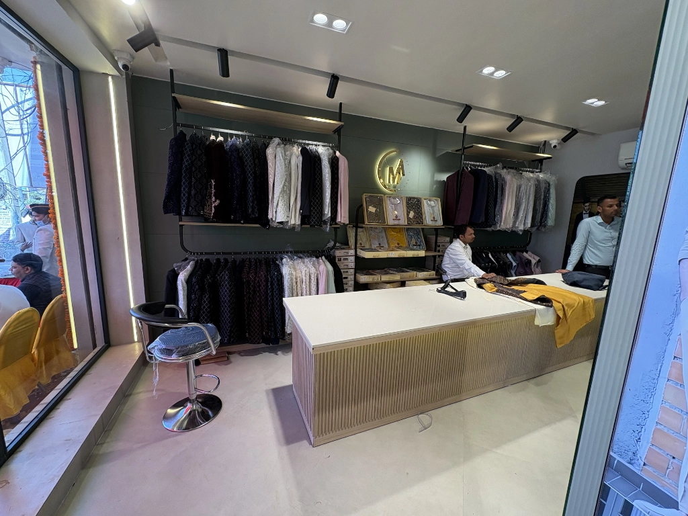

Budget Planning in Construction: How to Protect Yourself from the Shock That No One Warns You About
निर्माण में बजट योजना: उस झटके से खुद को कैसे बचाएं जिसके बारे में कोई आपको चेतावनी नहीं देता

Every homeowner must confront a certain situation. No one discusses this moment freely. A moment when it feels like the ground has been ripped from beneath your feet. The typical response is: "Sir/Ma'am, the budget will increase." Four words. And suddenly, the dream you've been developing in your imagination for months becomes unsteady.
Your heart drops, your mind racing, and you feel betrayed—by the process, the people, and, in some cases, by yourself. The majority of budget shocks are avoidable. Painful. Unnecessary. And preventable.
Let's speak about how to protect yourself against this emotional and financial earthquake—as if you've been on both sides. Not like a salesman. Not like an IT specialist. But, like another human being who understands how devastating this experience can be.
1. The First Mistake: Planning for the "Expected," Not the Real
Most people begin construction with a hopeful number in mind. Something you heard from a friend. Or a rough idea based on "per square foot" rates.
But construction does not care about your assumptions. It follows reality, not optimism.
And reality includes:
- Material price hikes
- Labor fluctuations
- Design changes
- Site challenges
- New ideas halfway
- Unseen conditions under the ground
- Rising costs of plumbing, electrical, waterproofing
You do not plan for these—but they are waiting for you.
Budget planning must include the invisible, not just the obvious.
2. The Hard Truth: Your Dream Home Has a Price Your Heart May Not Want to Hear
Nobody likes to be told: "You need more budget than you think."
So customers push the stress aside. They shrink the number. Hope it will magically fit.
But a dream is not a negotiable thing. If you want quality, comfort, light, ventilation, storage, durability, aesthetics, safety—they come with real, unavoidable costs.
And pretending otherwise only makes the shock worse later.
3. The Painful Domino Effect of Tiny Decisions
One of the biggest reasons customers face unexpected budget blows is this: Small decisions that look harmless today become big expenses tomorrow.
Examples?
- A slightly larger window = double the cost in fabrication
- A fancier tile = 10x more than the first choice
- One extra bathroom = plumbing + waterproofing + tiling + fixtures
- A "little elevation change" = major structural impact
- A bigger balcony = more reinforcement
Nobody warns you. Nobody explains the chain reaction. You realize it only when the contractor or architect reveals the new numbers. By then, you feel cornered.
4. The Most Human Mistake: Falling in Love Too Early
Here is something architects see every day: Customers fall in love with designs long before they fall in love with budgets.
You see a beautiful 3D view… and your heart says, "This is my dream." But your wallet whispers, "Not yet."
This emotional conflict is the source of most heartbreaks in construction.
Every line drawn should be tied to money. Every curve should be tied to cost. Every wow factor must have a price tag next to it.
Not to limit your dream—but to protect your peace.
5. The Lifesaver: Build a "Shock Absorber" into Your Budget
A realistic construction budget has two parts:
- The expected cost
- The buffer you hope you'll never need
That buffer is your shock absorber. Your emotional safety net. Your "anti-heartbreak" fund.
Experienced homeowners keep 10–20% aside.
Not because they are pessimistic—but because they are wise.
The buffer is not for luxury. It is for:
- Price changes
- Unseen repairs
- Structural surprises
- Last-minute essential upgrades
Think of it as wearing a seatbelt. Most days you will not need it. But when you do, it saves you.
6. The Power of Saying "No" (Even When You Love the Idea)
Budget protection requires courage. Especially the courage to say no to your own impulses.
Sometimes you will see a design detail that makes your heart jump. But if it pushes you into stress, debt, or regret: It is not beauty—it's a burden.
Your architect should be able to say: "Let us skip this. It is not worth the future stress."
You must be able to say: "I will come back for this in Phase 2."
This is maturity. This is strength. This is smart construction.
7. Let Your Architect Be Your Financial Bodyguard
A good architect does not only design. They shield you from disaster.
They tell you:
- What is necessary?
- What is optional?
- What is overpriced?
- What is long-lasting?
- What is a trap?
- What can be done later?
- What is worth investing in?
They are not just shaping your building. They are protecting your emotions.
Construction is not a technical journey. It is a human journey. A sensitive one. A vulnerable one.
And budget planning is the emotional backbone of that journey.
The Final Message: Don't Let Your Dream Turn Into a Nightmare
Your home is not just a building. It is your silent witness. Your daily comfort. Your safe space. Your legacy.
It should never be born out of fear, stress, shock, or financial trauma.
With the right planning, the right transparency, and the right team—your dream can rise peacefully.
No shocks. No heartbreaks. Just clarity, control, and confidence.
Because construction should not break you. It should build you.
Need Help with Budget Planning?
बजट योजना में मदद चाहिए?
Let's create a realistic, transparent budget plan that protects your peace and brings your dream to life.
Schedule a Consultation